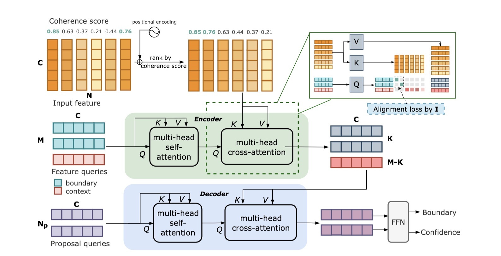
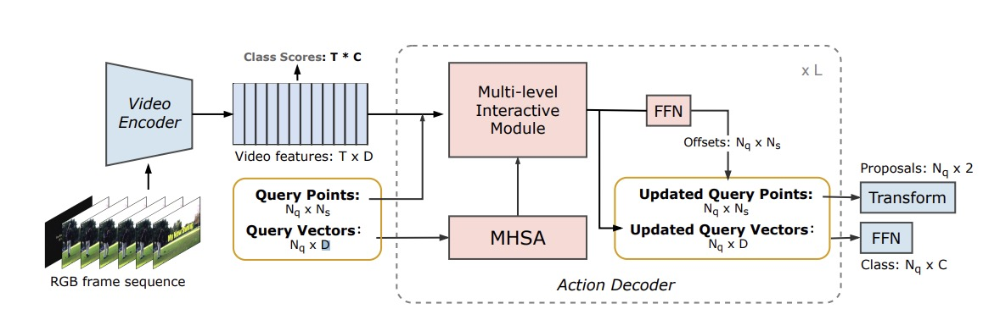

My research interest lies in computer vision and graphics, with recent focus on 3D vision and 3D scene generation. I previously worked on action localization and detection in videos.
We propose camera-controllable human image animation task for generating video clips that are similar to real movie clips. To achieve this, we collect a dataset named HumanVid, and a baseline model combined by Animate Anyone and CameraCtrl. Without any tricks, we show that a simple baseline trained on our dataset could generate movie-level video clips.
A new Dual-level query-based TAD framework to precisely detect actions from both instance-level and boundary-level.

Temporal Perceiver: A General Architecture for Arbitrary Boundary Detection
Jing Tan, Yuhong Wang, Gangshan Wu, Limin Wang T-PAMI, 2023
arXiv /
code /
blog
We present Temporal Perceiver (TP), a general architecture based on Transformer decoders as a unified solution to detect arbitrary generic boundaries, including shot-level, event-level and scene-level temporal boundaries.

PointTAD: Multi-Label Temporal Action Detection with Learnable Query Points Jing Tan, Xiaotong Zhao, Xintian Shi, Bin Kang, Limin Wang NeurIPS, 2022
arXiv /
code /
blog
PointTAD effectively tackles multi-label TAD by introducing a set of learnable query points to represent the action keyframes.
{kind=link}